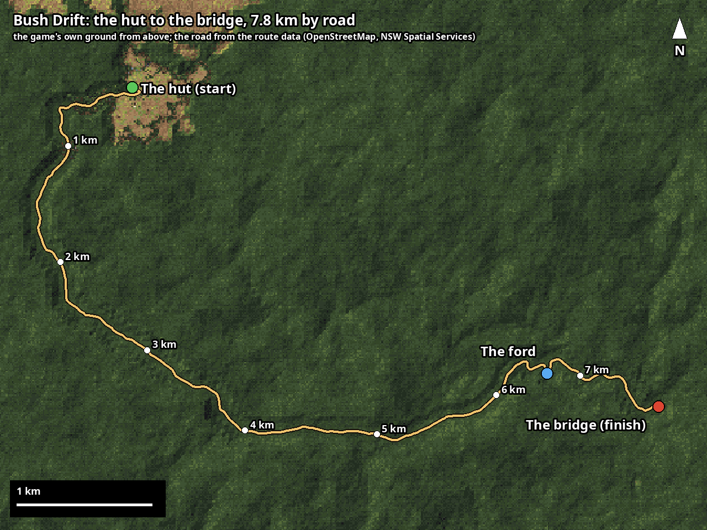

Controls
| ← → | steer |
| ↑ / ↓ | accelerate / brake |
| Space | handbrake (swing the back out) |
| L | Low Range, the ute's 4WD low (both modes; in at up to 20 km/h) |
| U | the UHF radio (Explore, once it's fitted) |
| R | restart from the hut (in Explore: recover when stuck) |
| P | pixel size |
| M | the map (Explore: pauses on it; M again to drive on) |
| Esc | pause (Drift and Explore) |
| F | full screen (the ⛶ button too) |
| Enter / Esc | menus |
A gamepad works too: Start pauses, Select restarts a Drift run, D-pad down is the radio, Start and Select together show the readout. On the keyboard, hold ↓ to stop; let go and press it again for reverse.
Click the game once first so it gets the keyboard and the sound.
Scoring
- Any slide at 25 km/h or more fills the pot: the more sideways and the faster, the more points (shallow slides count too).
- Keep sliding and the multiplier climbs (up to ×9). No time-out.
- The pot (× multiplier) banks itself about 4 seconds after your last slide (no bank button), so the multiplier carries down a straight into the next corner; a thin bar under the pot drains while it waits. The bridge banks it too.
- Briefly off the road the pot freezes (greyed): nothing added, the multiplier kept. Back on within 3 seconds and it carries on; longer and it banks.
- A thud into something solid or a spin loses the unbanked pot and the multiplier (donuts are fine). Crash into a tree or a post hard and the run's over. Logs splinter: each one is firewood in the tray.
- Donuts on the road: +500 each (full lock and throttle from a stop). Practise in the car park.
- Off the road is fine for 15 seconds (it says OFF-ROAD and counts down); stay out past that and you're put back on the track, or, until Explore is open, the run's over. Nothing scores off the road, the hut's clearing included. There's no way through the bank at the bush's edge, and the bridge needs every checkpoint along the road.
- 20 deer are hidden in the bush, the same spots every run. Drive into one to find it. Your finds and the hidden achievements are kept on your device (title menu → Achievements).
Explore (unlocks as you play)
- No score and no clock: drive the road both ways, or off it, as long as you like. Trees just stop you.
- Firewood: split logs (hit them at about 20 to 30 km/h; steadier as the saw blunts) and bring a full tray back to the hut. Skip the rotten ones, and don't hit them too hard. Will's chainsaw blunts as you go; sharpen it at the hut (pause menu). File it well enough and you can sharpen it out in the bush too.
- The hut's clearing hides the makings of a charcuterie board, in new spots every day. Find all twelve.
- Low Range (L, or the stick on a phone): the ute's 4WD low, for crawling up steep, rough ground. Some things need it. Stones washed up against a big rock or stump make steps: pick a line and crawl up, or go round.
- Creek bogs: sand bars and silty mud down the creek way can really bog the ute. Air down, use Low Range, keep your momentum, and rock it back and forth if you're stuck.
- The ute wears and breaks, and tells you what's wrong: an alert top left while you drive, and pause, The ute, for the detail. Change a tyre there. Set the tyre pressures any time (pause, Tyre pressures: road, gravel, creek or your own; set at once when you're stopped, or at your next stop). The hut fixes everything. Rather not? Damage: Off, in Settings or the pause menu.
- Achievements now have sections, filters and clues for the hidden ones. Track up to three and they show while you drive.
- Pause (Esc, the button top left, or Start on a pad): map, The ute, tyre pressures, the Cattleman's garage (at the hut), back to the hut, start a new day, Settings. Your firewood, deer and the saw, and the little ute with what's hurt, are shown there too. In Drift, pause holds the run: Keep driving, Restart run, Settings, Quit to title.
New in play test 4
- Drive anywhere. Off the track the forest is solid, natural bush right out to the horizon. No invisible walls: the edge is big trees, thick scrub and boulders.
- The bush slows you down: shrubs, ferns and tussocks drag by their size and your speed, bend as you push through and throw up leaves and twigs. Thick tea-tree slows you to a crawl, but never stops you dead.
- Knock things over: saplings, wattles, stags and small trees lean, give and come down, or snap and leave a jagged stump. Big gums don't move. What you knock down, and the track you flatten, stay for the rest of the day.
- The local forest's own plants in natural stands, full gums across open ground and a canopy into the blue distance, with nothing growing in from the ground as you drive.
- A much fuller creek: rock gardens, huge fallen gums, sticks that snap, and sand bars and silty mud that will really bog you. A road that fights back: potholes, ruts, stones, washouts and whoa-boys.
- The Cattleman tells you what's wrong: flats, slow leaks, bent steering you can feel, a holed radiator, fading shocks, wet brakes. A small alert as it happens, the rest in the pause menu. A proper tyre change, and tyre pressures any time: road, gravel and creek presets, or your own.
- Honest rocks and logs: two solid axles that twist, tyres that climb what they can, a belly that scrapes. Some things need Low Range. A body that moves: it leans in corners and dips under brakes, and on a phone you feel the corrugations buzz.
- The Cattleman's garage, back at the hut: the ute on a turntable. Fit or take off each piece of kit you've earned and see what it weighs and does. The clues are under Achievements. Rather not break things? Damage: Off.
- The hut and its camp rebuilt from photos and video of the real place: the roof, the chimney, the tank, a mown lawn, the fire pit, benches and table, and the trees round it placed one by one. Light your own fire (you'll have to go looking for wood). Quayle's out bush: get on the UHF and he'll talk you in, and he rides in the tray after. The deer graze and look up as you come near. The stew: bring Quayle and a deer home and build the fire up.
- Soft ground: how far you sink depends on your tyre pressure, so air down for sand and bogs. Rollovers in Explore: up on two wheels, then back down, or over. The throttle controller: earn it with a Full pull, then set it from Eco 1-9 to Sport 1-9.
- Drift calls: a good slide gets a word when it ends, from Tidy up to Bush legend! Flick into the next corner for a chain; a slide you can't catch is SPUN! and costs the pot. The pot banks itself about 4 seconds after your last slide, and pause holds the run.
- Full screen on any phone, the buttons over the picture (Settings → Screen: Classic 4:3 for the old look). New pedals for gas and brake, a lever for the handbrake, a stick for Low Range, and a small R for reverse.
- Sound: wind in the trees, a whipbird and kookaburras, the creek, tyres by the surface, branches squealing on the panels. Looks: sharper shadows round the ute, running water with wakes round the rocks, and the ute in finer detail.
- A steady 60 frames a second at every test spot on a Pixel 8 Pro, the title in a third of a second, no hitch starting a drive, and a third of the memory. Settings → Detail: Normal for older phones.
- Fixes: tougher saves, no more flickering ground or floating "diamonds" in the grass, no bouncing off rocks you couldn't see, and plenty more. There's more out there than this list says.
The route

7.8 km by road: from the hut across the plateau, down the descent to a creek ford and on to the bridge. The game's own ground from above; the road from OpenStreetMap and NSW Spatial Services data.
Android: installing the app
- On your phone, tap ⬇ Android app above. It downloads
bush-drift.apk.
- Open the download. Android asks to allow installing apps from your browser: tap Settings, switch on Allow from this source, then go back.
- Tap Install. If Play Protect warns about an unknown developer, choose More details → Install anyway (it's not from the Play Store, that's all).
- Turn the phone sideways. The lower left of the screen steers; the pedals (gas and brake), the lever (handbrake), the stick (Low Range) and a small R (reverse) are on the right; pause and restart at the top. Install it straight over the last play test: your deer, achievements and records stay.
Android 10 or newer. On an iPhone, play in the browser: tap Share, then Add to Home Screen, and open it from there for the whole screen.
What I'd love to know
- Does it run smoothly on your computer or phone (which browser or phone)?
- How far did you get, and what ended your runs?
- The handling: too grippy, about right, or too slippery? Can you catch a big slide? On a phone: are the touch buttons the right size and place?
- Explore: what did you find, and where did you get stuck? What broke on your ute, and could you tell what was wrong?
- Bush-bashing: does pushing through scrub, saplings and small trees feel right? Anything that stopped you dead or felt unfair (a tree that wouldn't give, a bog you couldn't escape, a rock you bounced off)?
- Could you find Quayle with the radio? Did you get the fire going?
- On a phone: the new pedals and the R button: does reversing feel natural? Does it ever stutter or get hot?
- Did your progress from play test 3 come through?
- What was fun, and what was annoying or confusing?
- The speed effect: too much, about right, or too little?
- Full screen: does it fit your screen (anything hidden under the camera or a button)? If it stutters, what does Settings → Performance stats say?
- Drift calls: do good slides get called often enough, and the big ones rarely enough? Too chatty, or not enough?
- Sound, look, scoring: anything that feels off.
The feedback button opens a short form on GitHub (a free account is needed). Or just message me.